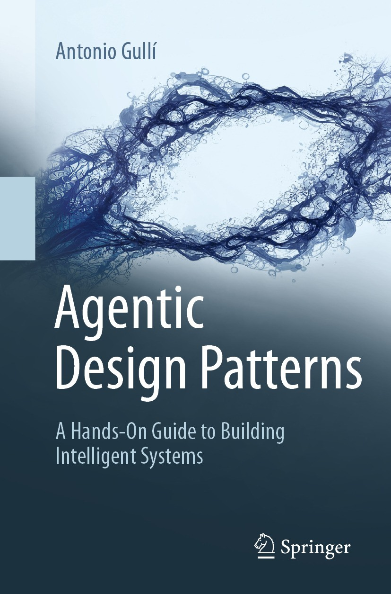

Agentic Design Patterns
A Hands-On Guide to Building Intelligent Systems
A practical catalog of 21 proven agentic patterns — from prompt chaining and tool use to multi-agent collaboration and self-correction. Each chapter pairs a clear pattern overview and real-world use cases with runnable code in LangChain, CrewAI and Google's Agent Development Kit (ADK), giving developers a shared vocabulary for agent logic.
🌐 Also available in Chinese — 《智能体设计模式》, Tsinghua University Press · Buy (Dangdang) · JD.com